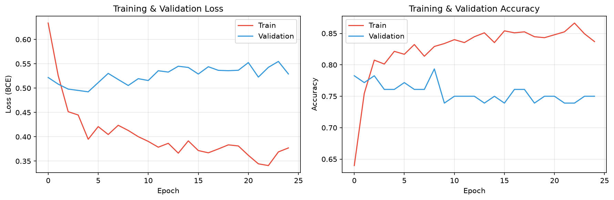
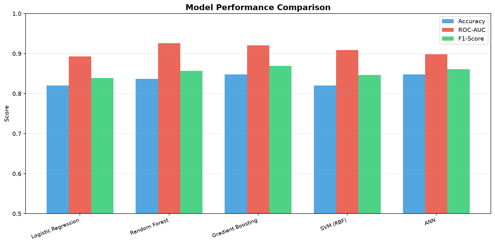
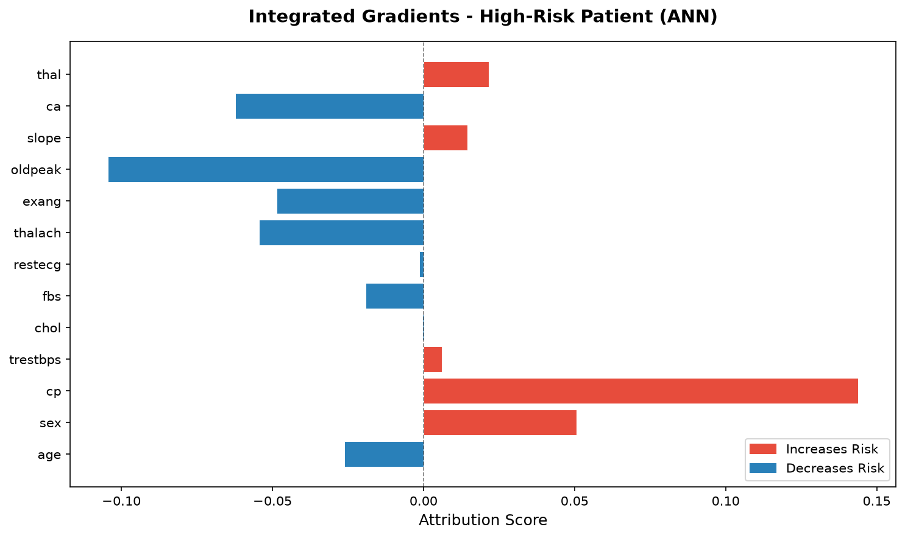
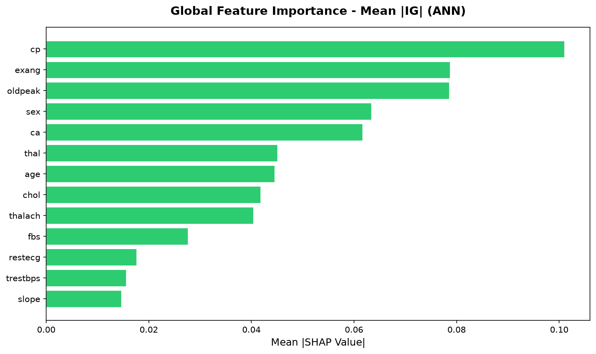
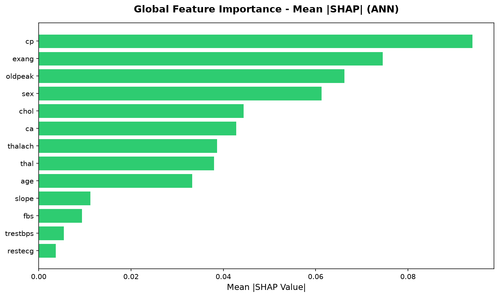
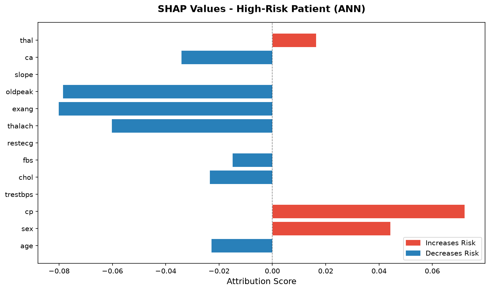

ANN Training History
Shows how the model's loss decreased and accuracy improved over training epochs. The tight alignment between training and validation curves confirms the model generalizes well and does not overfit the data.
training_history.png
Model Performance Comparison
Compares the ANN against four traditional ML baselines — Logistic Regression, Random Forest, Gradient Boosting, and SVM — across Accuracy, ROC-AUC, and F1-Score. The ANN achieves competitive performance with an ROC-AUC of 89.85%.
model_comparison.png
Integrated Gradients — Single Patient
Shows which features increased or decreased the risk score for one high-risk patient. Red bars push the prediction towards disease, blue bars push it away — giving a clinician a clear, patient-level explanation of why the model flagged this individual.
ig_attribution_sample.png
Integrated Gradients — Global Importance
Displays the average absolute IG attribution across all test patients, revealing which features the ANN relies on most overall. Chest pain type (cp), exercise angina (exang), and ST depression (oldpeak) emerge as the strongest global predictors.
ig_global_importance.png
SHAP — Global Feature Importance
Mean absolute SHAP values across 30 test patients, showing population-level feature importance using game-theoretic attribution. The rankings closely agree with Integrated Gradients, providing cross-validated clinical evidence for the model's learned patterns.
shap_global_importance.png
SHAP — Single Patient Local Explanation
SHAP waterfall for one high-risk patient showing the exact contribution of each feature to that specific prediction. A doctor can use this to understand precisely why the model predicted heart disease for this individual and decide whether to investigate further.
shap_local_sample.png